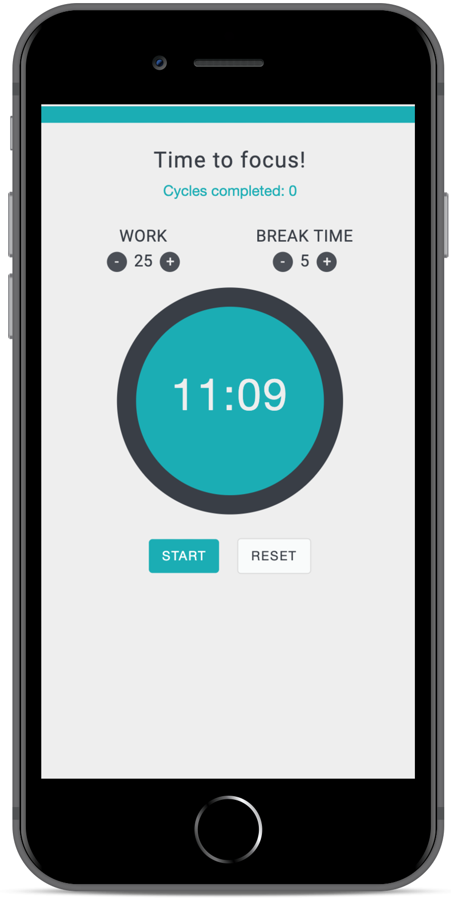

“Perfectionism prevents action. Waiting until you have devised the perfect solution to something is merely a form of procrastination.” ̶ Staffan Noteberg

Increase your productivity by setting your own work and break times.